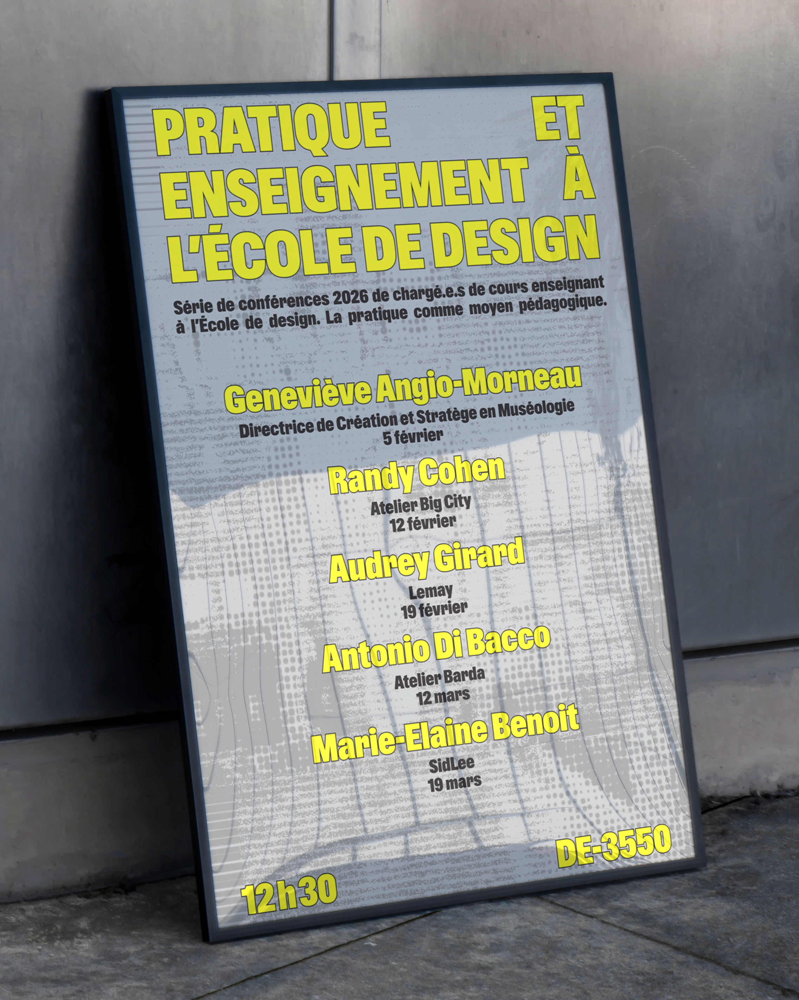
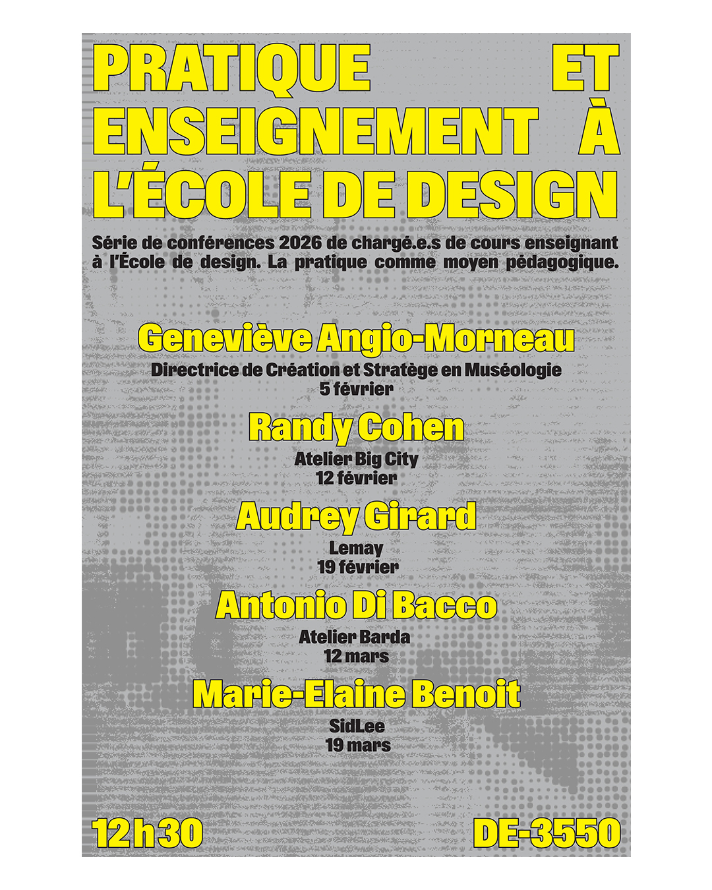
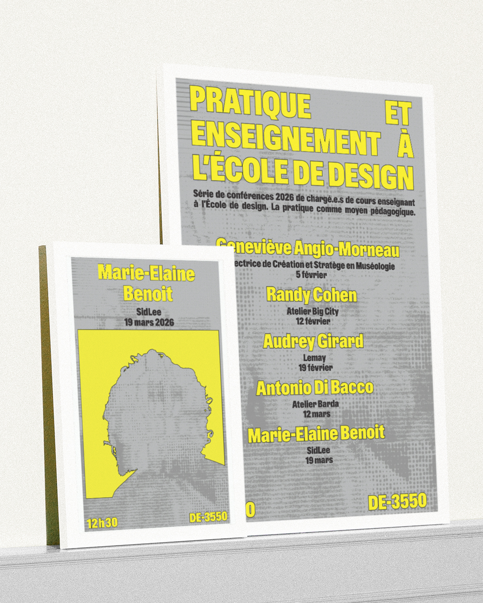

The visual identity for this lecture series at UQAM's School of Design was developed around a simple challenge: how to create a coherent editorial system for a diverse group of speakers who are both leading practitioners in their fields and influential figures within the school. While extensive written content and photographic portraits were provided, the objective was to establish a strong visual hierarchy without relying on conventional image-led promotion.
The primary poster reduces the event to its essentials: a bold all-caps title paired with a structured list of dates and speakers. Individual posters expand the system while maintaining consistency. Rather than presenting full portraits, each speaker is represented only through a vectorized silhouette embedded within yellow typographic forms. Set against the school’s grey brutalist architecture, the identity creates intrigue without relying on conventional portraiture, balancing individuality and cohesion across the series.




Credits
Client: Éric Daoust
UQAM School of Design
Poster and flyer design:
Victor Percoco & Alicia Melançon
Illustrations: Victor Percoco
Font: ABC Gravity Condensed Bold